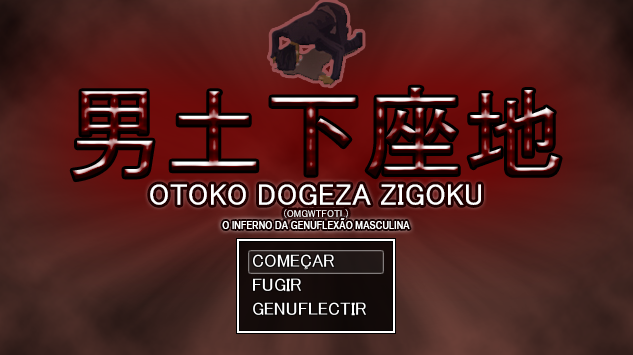
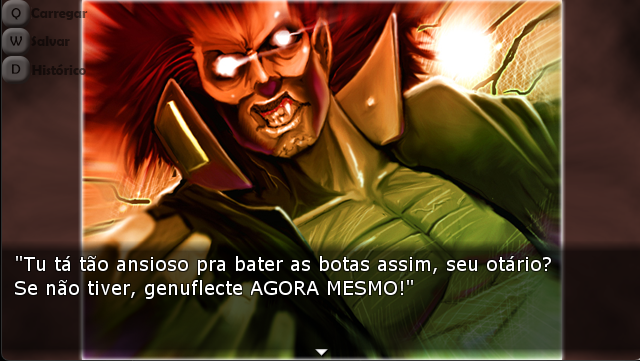
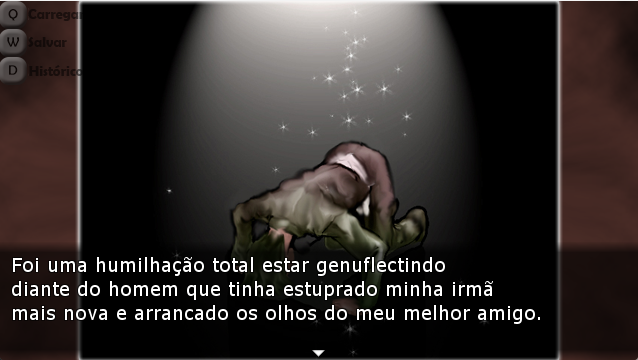
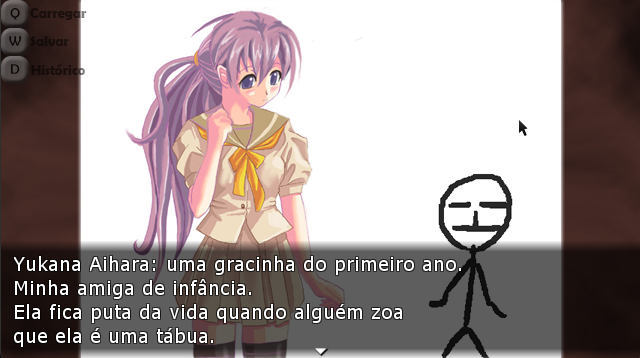

OTOKO DOGEZA ZIGOKU [Tradução em Português Brasileiro]
GENUFLECTA OU MORRA! Agora, finalmente, o jogo lunático que recebeu aplausos entusiásticos de... um número incrivelmente pequeno de fãs japoneses fanáticos...
Esta obra vai fazer você dizer MDS, QUE PORRA É ESSA e PQP ao mesmo tempo -- e, como tal, não é nada apropriada para menores de 18 anos ou pessoas com sensibilidade delicada.
Considere: em diferentes momentos, ela apresenta coisas como estupro por uma besta com tentáculos, ataques suicidas kamikaze e espancamento de filhotes de urso até a morte com pés-de-cabra.
Proceda com extrema cautela.
Título: 男土下座地獄 - Otoko Dogeza Jigoku (O Inferno da Genuflexão Masculina
Desenvolvedores: Hanpamania-Soft
Uma das VNs mais bizarras e toscas que você verá.

Progresso
Completo!
Imagens da Tradução



Espero que gostem da tradução!
Download: link
Senha: obgepicsbasement
Tutorial e Ajuda
O download contém o jogo que é de graça, com a tradução já embutida, esta é a versão do Game Jolt, só extrair e jogar.
O jogo é bem antigo e contém um bug no começo do jogo em que um texto de um personagem é mostrado duas vezes seguidas.
Salvar e carregar um save só funciona em loadings quando o texto ainda não aparece na tela.
Todos os direitos do jogo são da Publisher e Desenvolvedora do jogo, Hanpamania-Soft, o jogo é de graça e pode ser baixada a versão japonesa no site hanpamania-soft.com
Essa tradução não tem intenção de lucrar em cima e apenas de oferecer uma tradução não oficial para a Língua Portuguesa